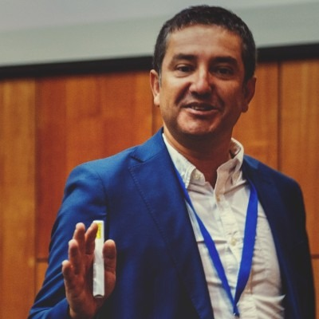

Juan Luis Arévalo Medel
Ingeniero Civil Industrial | Magíster en Gestión de Personas
Profesor Conferenciante y Consultor en Innovación, Emprendimiento y Gestión Público-Privada. Más de 20 años liderando procesos de desarrollo y fortalecimiento institucional.

Sobre Mí
Ingeniero Civil Industrial de la Universidad de Talca y Magíster en Gestión de Personas en Organizaciones de la Universidad Alberto Hurtado. Cuento con una sólida trayectoria profesional de más de 20 años en instituciones públicas, académicas y privadas.
Me especializo en liderar procesos de planificación estratégica, innovación, emprendimiento, transferencia tecnológica, gestión organizacional y desarrollo territorial.
- Formación en educación por competencias y gestión pública.
- Mentor de emprendimiento certificado (Instituto 3iE, UTFSM).
- Ex becario DAAD en la TU Dresden, Alemania (2000-2001).
Academia
Profesor Conferenciante en la Universidad de Talca (Ingeniería Comercial, MBA, Diplomados).
Consultoría
Socio fundador en Grupo Yagan y Consultor Senior en BPM Key Consulting.
Trayectoria Profesional
Subdirector Regional & Cargos Directivos
Ejerció como Subdirector Regional de CORFO (2016-2019) responsable de competitividad e innovación. Lideró la planificación, proyectos FNDR y control de gestión en el Gobierno Regional del Maule. Contraparte técnica en la "Estrategia Regional de Desarrollo Maule 2020".
Consultor Estratégico y Socio Fundador
Líder en innovación y gestión territorial en Grupo Yagan. Consultor en BPM Key Consulting para modelos de innovación en IES (IP CFT 2030). Especialista en articulación de redes academia-empresa-estado.
Coordinación e Inversión Territorial
Coordinador Regional del PIRDT y planificador en la Ilustre Municipalidad de Talca, formulando proyectos de inversión territorial e infraestructura rural apoyados por el Banco Mundial y SUBDERE.
Competencias y Perfil
Habilidades Directivas
Resolución de problemas, liderazgo de equipos multidisciplinarios, planificación estratégica y gestión de alto desempeño.
Herramientas & Idiomas
Dominio avanzado de Microsoft Office. Idiomas: Español (Nativo), Inglés (Profesional), Alemán (Básico).
Intereses Personales
Trekking, montaña, cuidado de flora nativa en la precordillera del Maule. Socio fundador de la Corporación Enogastronómica del Maule.